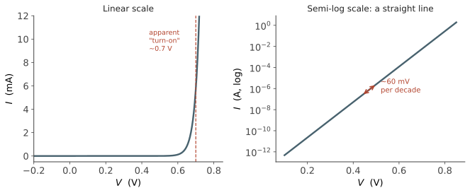

本页目录
器件 II · pn 结与二极管
层次：本科核心。 pn 结是半导体器件的第一个"结构"——两块掺杂不同的硅接在一起。它本身是二极管、太阳能电池、LED；更重要的是，它是 MOSFET 源漏与衬底之间的隔离，也是 CMOS 里那个必须小心提防的寄生结构。本页的分析方法（能带图 + 费米能级对齐）会在后面每个器件里重复使用。
学习层：同一块结，为什么既能整流又能储存电荷？
1. 具体谜题：0.60 V 到 0.66 V，电流为何可能差十倍？
把一只硅二极管从 \(0.60\ \mathrm{V}\) 正偏提高到 \(0.66\ \mathrm{V}\)，电流会增加多少？再把它从零偏置改成 \(-1\ \mathrm{V}\) 反偏，耗尽层是变窄还是变宽，结电容是变大还是变小？这两个问题看似分别属于“整流”和“电容”，实际都由同一个空间电荷区控制。
先不要看曲线或公式的结果。请预测：\(N_A=N_D=10^{16}\ \mathrm{cm^{-3}}\) 时，零偏置的内建势垒大约是 \(0.7\ \mathrm{V}\)；加反偏后，\(W\) 与 \(C_j/A\) 的变化方向是什么；正偏电流的十倍电压步长是否会随掺杂显著改变。
2. 先预测：平衡时究竟是谁在“顶住”扩散？
交互台会先要求你选择：
- 接触 n 区和 p 区的瞬间，电子与空穴各向哪边扩散？
- 留下的离化施主、受主如何产生电场，电场方向如何阻止继续扩散？
- 反偏 \(-1\ \mathrm{V}\) 与正偏 \(+0.6\ \mathrm{V}\) 哪一种让耗尽宽度更大？二极管电流对电压是线性还是指数？
预测提交前只显示掺杂、偏压和温度；提交后才揭示能带账本、归一化电流、耗尽宽度和结电容。
3. 最小心智模型：扩散制造势垒，漂移把它锁住
把 pn 结想成一条需要同时满足两项条件的界面：载流子浓度梯度想让多数载流子扩散，空间电荷产生的电场又驱动它们漂移回去。热平衡时两股通量相消，费米能级变平；外加偏压只是改变势垒高度与空间电荷区宽度。
这个模型足够解释整流、变容和击穿的第一阶行为，但不包含串联电阻、复合电流、隧穿、强注入和高场碰撞电离。实验使用突变结、耗尽近似、理想因子 \(n=1\) 和固定面积的教学模型。
4. 形式机制与不变量：势垒、宽度和指数
内建电势、耗尽宽度和 Shockley 方程分别是
这里 \(V<0\) 表示反偏；若正偏接近或超过 \(V_{bi}\)，耗尽近似会触及边界，不能把根号外的负值当作物理结果。由 \(V_T=kT/q\) 立刻得到 \(\Delta V=nV_T\ln 10\approx60n\ \mathrm{mV}\) 每十倍电流。可审计的不变量是 \(E_F\) 在热平衡处处相同、\(W\) 增大时 \(C_j/A=\varepsilon_s/W\) 减小，以及在固定 \(I_S,n,T\) 下十倍电流所需电压步长为 \(nV_T\ln 10\)。
5. 交互实验：把一条指数曲线拆成三个可测量量
无 JavaScript 时的静态读法：取硅 \(n_i=10^{10}\ \mathrm{cm^{-3}}\)、\(\varepsilon_s=1.04\times10^{-12}\ \mathrm{F/cm}\)、\(N_A=N_D=10^{16}\ \mathrm{cm^{-3}}\)、\(T=300\ \mathrm K\)、理想因子 \(n=1\)。令 \(I_S\) 只作归一化基准，读 \(I/I_S\)。
| 偏压 \(V\) | 势垒读法 | \(W\) | \(C_j/A\) | \(I/I_S\) |
|---|---|---|---|---|
| 0 V | \(V_{bi}\approx0.714\ \mathrm V\) | \(0.431\ \mu\mathrm m\) | \(2.41\times10^{-8}\ \mathrm{F/cm^2}\) | 0 |
| -1 V | 耗尽势降约 \(1.714\ \mathrm V\) | \(0.667\ \mu\mathrm m\) | \(1.56\times10^{-8}\ \mathrm{F/cm^2}\) | \(-1\) |
| 0.60 V | 正偏降低势垒 | 约 \(0.172\ \mu\mathrm m\)（近似边界） | 增大 | \(1.2\times10^{10}\) |
| 0.66 V | 再降低 \(60\ \mathrm{mV}\) | 需考虑高注入修正 | 不再由同一近似可靠决定 | \(1.2\times10^{11}\) |
脚本允许独立改变 \(N_A,N_D\)、偏压与温度，绘制 \(I/I_S\) 的对数响应，并同时显示 \(W\)、\(C_j/A\)、\(V_{bi}\) 与“60 mV/dec”基准。正偏靠近势垒边界时，它会标出耗尽近似的失效提醒，而不是继续生成无意义的负根号。
6. 反例与失效边界：0.7 V 不是材料的硬阈值
- “二极管在 \(0.7\ \mathrm V\) 才开启”只是线性坐标下的工程近似；Shockley 指数从任意正偏开始，串联电阻在大电流下还会把曲线拉直。
- “反偏电流永远饱和”忽略了产生复合、表面漏电、齐纳隧穿和雪崩击穿；高场下 \(I_S\) 的理想模型不再是完整答案。
- “掺杂加倍，\(V_{bi}\) 加倍”违反对数依赖；但耗尽宽度对掺杂是平方根反比，轻掺杂侧仍承担主要电压。
- “结电容越大速度越快”方向相反；储存电荷与 \(C_j\) 会拉长充放电时间，扩散电容还会在正偏下加入新的负担。
7. 迁移题：从二极管推断真实版图风险
给一个 MOSFET 的源漏结，先用轻掺杂一侧承担耗尽宽度的规则估算结电容，再问反偏漏端电场是否可能触发穿通或击穿。若版图中多个结组成 pnpn 路径，哪一项假设被破坏，为什么会出现 CMOS 闩锁？这会把本页的空间电荷区直接迁移到下一页的 MOS 结构。
二、内建电势：接触时发生了什么
把 n 型与 p 型硅接在一起，四步推理（这套推理请记住，后面反复用）：
- 浓度梯度驱动扩散：电子从 n 区扩散到 p 区，空穴反向扩散；
- 留下不可动的电荷：n 区失去电子后留下带正电的施主离子，p 区留下负电的受主离子 → 形成耗尽区（空间电荷区）；
- 产生内建电场：方向由 n 指向 p，阻止进一步扩散；
- 平衡：漂移与扩散相消，净电流为零，费米能级处处相等（上一页的万能钥匙）。
能带在结区弯曲，弯曲的总量就是内建电势：
硅中典型值 0.6–0.9 V。注意 \(V_{bi}\) 随掺杂对数增长——这是本课的第一个"对数依赖"，工程上意味着靠加大掺杂来提高内建电势收效甚微。
耗尽层宽度（突变结、耗尽近似）：
两个重要推论：
- \(W \propto 1/\sqrt{N}\)：重掺杂一侧耗尽区极薄，轻掺杂一侧承担大部分耗尽宽度。功率器件靠一侧轻掺杂的厚漂移区来承受高压（🔗 自动化站电力电子）；
- 反偏使 \(W\) 变宽（\(V<0\)）：这既是变容二极管的原理，也是 MOSFET 里漏端耗尽区侵入沟道、造成短沟道效应的根源（第五页）。
三、二极管方程
正偏时势垒降低，少子被大量注入对面；反偏时势垒升高，只剩极少的少子被抽走。推导（此处略过中间步骤，结论必须记住）给出Shockley 方程：
- \(I_S\) 是反向饱和电流，正比于 \(n_i^2\)，因而对温度与带隙极其敏感；
- \(n\) 是理想因子（1–2，取决于复合机制）；
- 室温下 \(V_T = 26\) mV，所以电压每增加约 60 mV，电流增大十倍（因为 \(\ln 10 \times 26\,\mathrm{mV} \approx 60\,\mathrm{mV}\)）。

"0.7 V 开启电压"是一个方便的谎言：指数函数没有阈值，只是在线性坐标下看起来像。换成对数坐标，真相立刻显现——这是工程中"选对坐标就看清本质"的经典案例。
这个 60 mV/dec 极其重要：它源于载流子服从玻尔兹曼分布（热尾巴），是热力学决定的、无法通过改进工艺绕过的极限。第四页会看到它如何直接卡死了芯片的供电电压，进而造成功耗墙。
四、反向击穿
反偏电压足够大时电流骤增，两种机制：
- 雪崩击穿：高电场加速载流子，碰撞电离产生新的电子空穴对，链式放大。正温度系数（温度升高击穿电压升高），常见于轻掺杂结；
- 齐纳击穿：极重掺杂、耗尽区极薄时的量子隧穿。负温度系数，用于稳压二极管。
工程含义：击穿电压设定了器件的电压上限。这解释了为什么低压逻辑与高压功率器件在结构上完全不同——后者需要厚而轻掺杂的漂移区来分担电场。
五、结电容：速度的敌人
耗尽区像一个电容（两侧是准中性区，中间是绝缘的空间电荷区）：
反偏越深，电容越小。加上正偏时的扩散电容（存储的少子电荷），二者共同限制开关速度。
这是本课第一个反复出现的主题：任何结构都自带寄生电容，而电容就是延迟与功耗。CMOS 中源漏结电容是负载电容的重要成分（第六页），互连电容更是先进节点的性能瓶颈。
六、在 CMOS 中的角色：隔离与寄生
在数字芯片里，pn 结主要不作为二极管使用，而是承担两个角色：
① 隔离：MOSFET 的源、漏（n⁺）与 p 型衬底形成 pn 结。正常工作时它们始终反偏，从而把器件彼此隔离。反向漏电流就是芯片静态功耗的一部分（第四页）。
② 寄生与失效：CMOS 工艺中 n 阱、p 衬底、源漏区会构成寄生的 pnpn 结构（可控硅）。若被噪声或静电触发导通，会形成从电源到地的低阻通路——闩锁效应（latch-up），可以烧毁芯片。防止闩锁是版图设计规则中一整套约束的来源（保护环、阱接触密度、间距规则）。
这是本课"抽象会漏"的第一个实例：数字设计者眼中只有 0 和 1，但衬底里潜伏着一个随时可能导通的寄生器件——物理层的现实会穿透逻辑抽象打上来。
七、要点
- 分析任何结构的三步法：画能带图 → 费米能级对齐 → 看载流子怎么走。后面 MOS 电容、异质结、太阳能电池全用这一套；
- 60 mV/decade 是玻尔兹曼极限，全课最重要的数字之一；
- 耗尽宽度 \(\propto 1/\sqrt{N}\)，重掺杂侧薄；
- 一切结构都有寄生电容与寄生器件——这是从理想电路走向真实芯片的第一课。
下一页：MOSFET。把一个电极隔着绝缘层放在半导体上，用电场在表面"感应"出一条导电沟道——这是二十世纪最重要的发明之一，也是本课其余部分的主角。